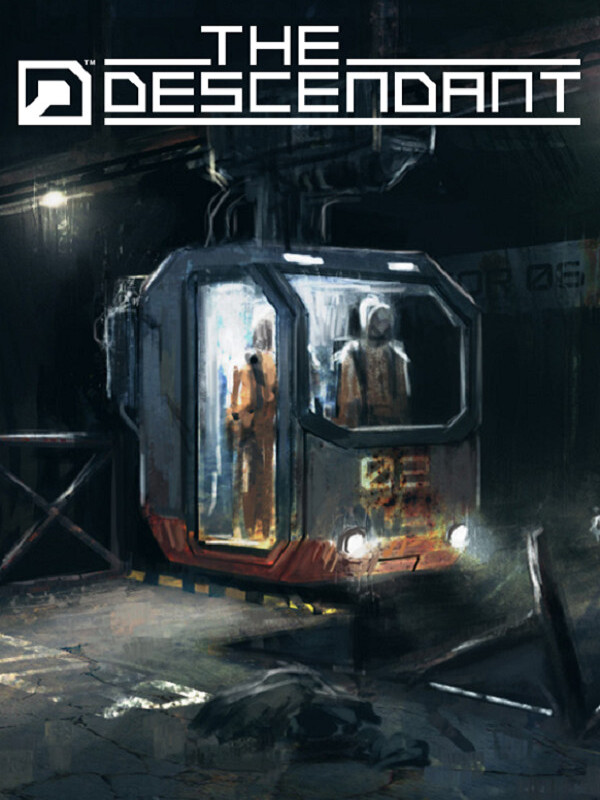

The Descendant
The Descendant
Details
|  | |
| Playtime | 3h 4m 0s |
| Last Activity | 19/01/2024 15:30:26 |
| Added | 31/01/2024 18:49:07 |
| Modified | 17/05/2025 23:55:15 |
| Completion Status | Played |
| Library | Steam |
| Source | Steam |
| Platform | PC (Windows) |
| Release Date | 24/03/2016 |
| Community Score | 70 |
| Critic Score | 76 |
| User Score | |
| Genre | Adventure Indie |
| Developer | Gaming Corps |
| Publisher | Microids Microids Indie |
| Feature | Single Player |
| Links | Steam Official Twitch |
| Tag | Adventure Alternate History Atmospheric Casual Choices Matter Episodic Free to Play Horror Indie Point & Click Post-apocalyptic Sci-fi Singleplayer Story Rich |
Description
THE DESCENDANT is a five part episodic adventure game series where the end of the world is only the start.
After climate change wrecked the planet, a man-made extinction event wiped humankind off the face of the Earth. Only a few thousand ‘descendants of humanity’ were hand-picked to survive the apocalypse, cryogenically suspended in underground bunkers known as Arks.
Centuries passed. The world recovered from the nuclear holocaust, and all the Arks reopened, except one — Ark-01.
Taking place across two timelines, in the past you'll play as Mia, a janitor tasked with keeping the precious descendants housed within Ark-01 alive while the facility continually fails around her, and in the present, you'll play as Donnie, one of the investigators trying to rescue any surviving descendants trapped within, all while discovering a far greater conspiracy buried within the underground Ark complex.
Every action and choice you make directly impacts who lives and who dies, leaving the fate of Ark-01, and mankind itself, in your hands. Will you save mankind? Or doom us all?
After climate change wrecked the planet, a man-made extinction event wiped humankind off the face of the Earth. Only a few thousand ‘descendants of humanity’ were hand-picked to survive the apocalypse, cryogenically suspended in underground bunkers known as Arks.
Centuries passed. The world recovered from the nuclear holocaust, and all the Arks reopened, except one — Ark-01.
Taking place across two timelines, in the past you'll play as Mia, a janitor tasked with keeping the precious descendants housed within Ark-01 alive while the facility continually fails around her, and in the present, you'll play as Donnie, one of the investigators trying to rescue any surviving descendants trapped within, all while discovering a far greater conspiracy buried within the underground Ark complex.
Every action and choice you make directly impacts who lives and who dies, leaving the fate of Ark-01, and mankind itself, in your hands. Will you save mankind? Or doom us all?
Key features
- An episodic adventure spreading across multiple story-rich timelines
- Investigative gameplay, challenging puzzles, tense action sequences
- Meaningful and difficult choices with branching dialogue
- A tailored experience, full of tension and drama
- Every player choice can influence the future of mankind